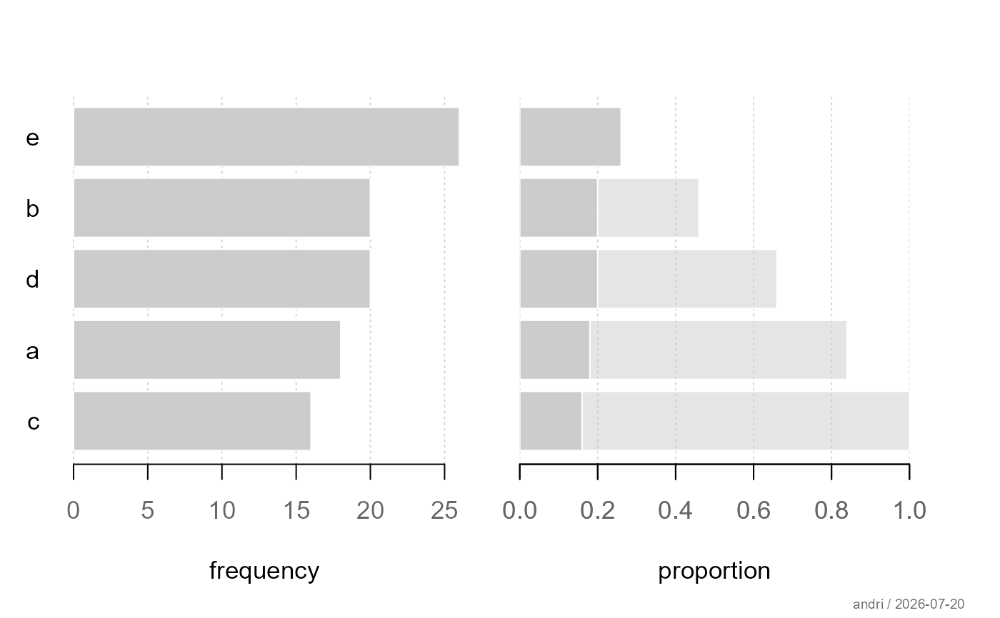
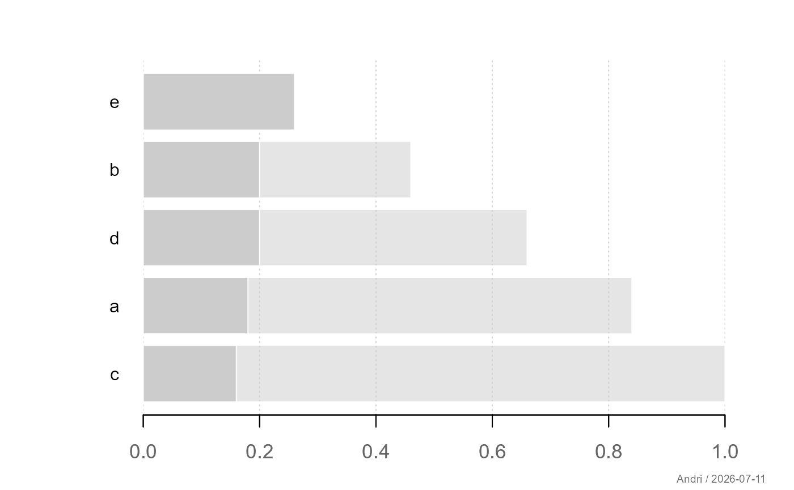
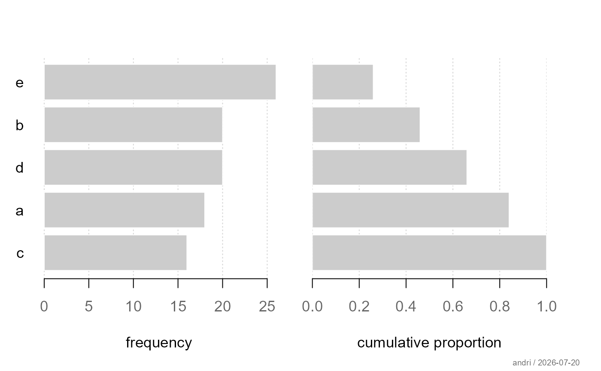
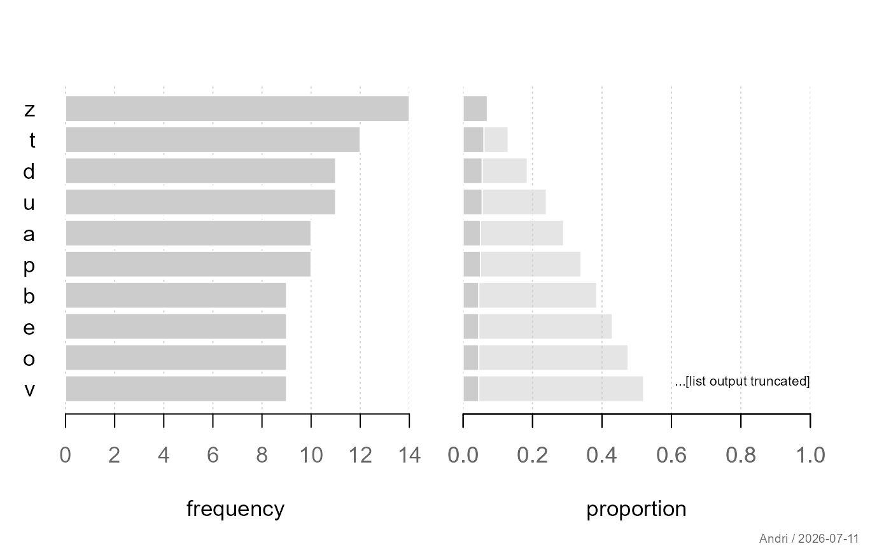

Visualizes the distribution of a categorical variable using horizontal bar plots of absolute and relative frequencies. Optionally, cumulative proportions (ECDF-style) can be displayed.
Usage
plotCatDist(
x,
type = c("both", "freq", "perc"),
ecdf = FALSE,
col = "grey80",
border = FALSE,
maxlablen = 25,
maxcats = NULL,
main = NULL,
...
)Arguments
- x
a factor, character vector, or table of counts.
- type
character; one of
"both","freq","perc". Controls whether absolute frequencies, relative frequencies, or both are displayed.- ecdf
logical; if
TRUE, cumulative proportions are shown instead of simple relative frequencies.- col
fill color for bars.
- border
logical; draw borders around bars.
- maxlablen
integer; maximum length of category labels before truncation.
- maxcats
optional maximum number of categories to display (truncates if exceeded).
- main
plot title.
- ...
further graphical parameters passed to
par().
Details
The function produces horizontal bar plots:
Absolute frequencies (counts)
Relative frequencies (percentages) or cumulative proportions
If type = "both", both views are shown side by side.
Long labels are truncated, and large category sets can be limited via
maxcats.
See also
Other plot.univariate:
plotArea(),
plotBar(),
plotBox(),
plotDens(),
plotDensBox(),
plotDot(),
plotECDF(),
plotFdist(),
plotLines(),
plotQQ(),
plotViolin()
Examples
# Basic usage
x <- factor(sample(letters[1:5], 100, TRUE))
plotCatDist(x)

# Only proportions
plotCatDist(x, type = "perc")


# With cumulative distribution
plotCatDist(x, ecdf = TRUE)


# Many categories (truncation)
x2 <- factor(sample(letters, 200, TRUE))
plotCatDist(x2, maxcats = 10)

